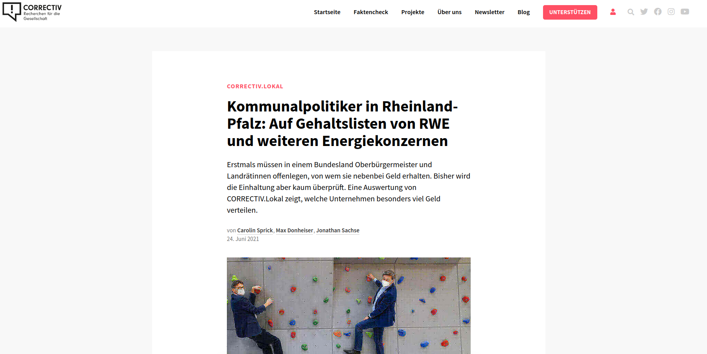

Nebeneinkünfte von Lokalpolitiker:innen
Contents
Nebeneinkünfte von Lokalpolitiker:innen#
Wir analysieren die Nebeneinkünfte von Landrät:innen in Rheinlandpfalz basierend auf den Daten und der Recherche von Correctiv
Die folgenden theoretischen Grundlagen werden dabei besprochen und geübt:
Dictionaries
Listen
For-Schleifen
While-Schleifen
Flow Control

Beispieldaten#
Ein Einblick in die Nebeneinkünfte im Jahr 2020 von Manfred Schur (CDU), Landrat von Cochem-Zell.
arbeitgeber = ['Altlastenzweckverband Tierische Nebenprodukte', 'Zweckverband Tierische Nebenprodukte Südwest', '(Zweckverband) Sparkasse Mittelmosel - Eifel Mosel Hunsrück', 'Sparkassenverband RP', 'RWE', 'Planungsgemeinschaft Mittelrhein-Westerwald', 'Westenergie', 'Abfallzweckverband Rhein-Mosel-Eifel', 'Rheinische Zusatzversorgungskasse', 'Agentur für Arbeit']
verdienst = [8073, 8073, 6038, 5575, 5200, 2195, 2000, 600, 194, 26]
Überblick:#
Wie viel Geld verdient Manfred Schur an Nebeneinkünften insgesamt?
Wie viel Geld erhält Manfred Schur von RWE?
# 1.
sum(verdienst)
37974
# 2.
rwe_idx = arbeitgeber.index('RWE')
print(verdienst[rwe_idx])
5200
Daten als Dictionary#
nebeneinkünfte = {'Altlastenzweckverband Tierische Nebenprodukte': 8073,
'Zweckverband Tierische Nebenprodukte Südwest': 8073,
'(Zweckverband) Sparkasse Mittelmosel - Eifel Mosel Hunsrück': 6038,
'Sparkassenverband RP': 5575,
'RWE': 5200,
'Planungsgemeinschaft Mittelrhein-Westerwald': 2195,
'Westenergie': 2000,
'Abfallzweckverband Rhein-Mosel-Eifel': 600,
'Rheinische Zusatzversorgungskasse': 194,
'Agentur für Arbeit': 26}
Überblick:#
Wie viel Geld verdient Manfred Schur an Nebeneinkünften insgesamt?
Wie viel Geld erhält Manfred Schur von RWE?
# 1. Wie viel Geld verdient Manfred Schur an Nebeneinkünften insgesamt?
print(sum(nebeneinkünfte.values()))
37974
# 2. Wie viel Geld erhält Manfred Schur von
print(nebeneinkünfte['RWE'])
5200
Verschachtelte Dictionaries ….#
data_cochemzell = {
'landrat': 'Manfred Schur',
'partei': 'CDU',
'nebeneinkünfte': {'Altlastenzweckverband Tierische Nebenprodukte': 8073,
'Zweckverband Tierische Nebenprodukte Südwest': 8073,
'(Zweckverband) Sparkasse Mittelmosel - Eifel Mosel Hunsrück': 6038,
'Sparkassenverband RP': 5575,
'RWE': 5200,
'Planungsgemeinschaft Mittelrhein-Westerwald': 2195,
'Westenergie': 2000,
'Abfallzweckverband Rhein-Mosel-Eifel': 600,
'Rheinische Zusatzversorgungskasse': 194,
'Agentur für Arbeit': 26,
}
}
print(type(data_cochemzell))
<class 'dict'>
print(data_cochemzell['partei'])
print(type(data_cochemzell['partei']))
CDU
<class 'str'>
print(data_cochemzell['nebeneinkünfte'])
{'Altlastenzweckverband Tierische Nebenprodukte': 8073, 'Zweckverband Tierische Nebenprodukte Südwest': 8073, '(Zweckverband) Sparkasse Mittelmosel - Eifel Mosel Hunsrück': 6038, 'Sparkassenverband RP': 5575, 'RWE': 5200, 'Planungsgemeinschaft Mittelrhein-Westerwald': 2195, 'Westenergie': 2000, 'Abfallzweckverband Rhein-Mosel-Eifel': 600, 'Rheinische Zusatzversorgungskasse': 194, 'Agentur für Arbeit': 26}
def summe(nebeneinkünfte):
return sum(nebeneinkünfte.values())
summe(data_cochemzell['nebeneinkünfte'])
37974
print(data_cochemzell['nebeneinkünfte']['RWE'])
5200
Alle Nebeneinkünfte von allen Landrät:innen in Rheinlandpfalz im Jahr 2020.#
data = [
{'kreis': 'Landkreis Mainz-Bingen',
'nebeneinkünfte': {'Planungsgemeinschaft Rheinhessen-Nahe': 1200,
'Rheinhessenwein e.V.': 25,
'Sparkasse Mainz': 8944,
'Zweckverband Sparkasse Mainz': 200,
'Zweckverband Sparkasse Rhein-Nahe': 9444,
'Zweckverband Verkehrsbund Rhein Nahe': 613.55},
'partei': 'CDU',
'person': 'Dorothea Schäfer'},
{'kreis': 'Kreisfreie Stadt Frankenthal (Pfalz)',
'nebeneinkünfte': {'Gewässerzweckverband Isenach-Eckbach': 6600,
'Pfälzische Pensionsanstalt': 200,
'Sparkasse Rhein-Haardt': 4074.96,
'Sparkassenverband RP': 5575,
'Verband Region Rhein-Neckar': 1560,
'Zweckverband Sparkasse Rhein-Haardt': 135},
'partei': 'CDU',
'person': 'Martin Hebich'},
{'kreis': 'Landkreis Trier-Saarburg',
'nebeneinkünfte': {'Innogy Westenergie': 1000,
'Kommunaler Rat': 25.56,
'Landkreistag RP': 6100,
'RWE': 129000,
'Sparkasse Trier': 9544,
'Sparkassen- und Giroverband RP': 5898.65,
'Zweckverband Industriepark Region Trier': 2208,
'Zweckverband Sparkasse Trier': 150},
'partei': 'CDU',
'person': 'Günther Schartz'},
{'kreis': 'Kreisfreie Stadt Mainz',
'nebeneinkünfte': {'Gas-Union Frankfurth/Mainz': 7812.5,
'Sparkasse Mainz': 8844,
'Zweckverband der Sparkasse Mainz': 300},
'partei': 'SPD',
'person': 'Michael Ebling'},
{'kreis': 'Kreisfreie Stadt Speyer',
'nebeneinkünfte': {'Kommunaler Rat': 76.68,
'Kreditausschuss': 400,
'Sparkasse Vorderpfalz': 400,
'Sparkassenverband RP': 7644,
'Zweckverband Sparkasse Vorderpfalz': 320},
'partei': 'SPD',
'person': 'Stefanie Seiler'},
{'kreis': 'Landkreis Kusel',
'nebeneinkünfte': {'Fremdenverkehrszweckverband': 1533.84,
'Kreissparkasse Kusel': 6880},
'partei': 'CDU',
'person': 'Otto Rubly'},
{'kreis': 'Kreisfreie Stadt Trier',
'nebeneinkünfte': {'Sparkasse Trier': 8944},
'partei': 'SPD',
'person': 'Wolfram Leibe'},
{'kreis': 'Landkreis Bad Dürkheim',
'nebeneinkünfte': {'Landkreistag RP': 100,
'Pfälzische Pensionsanstalt': 300,
'Sparkasse Rhein-Haardt': 6950.04,
'Verband Region Rhein-Neckar': 540,
'Zweckverband Sparkasse Rhein-Haardt': 270,
'Zweckverbandes Pollichia-Museum': 783.96},
'partei': 'CDU',
'person': 'Hans-Ulrich Ihlenfeld'},
{'kreis': 'Landkreis Cochem-Zell',
'nebeneinkünfte': {'(Zweckverband) Sparkasse Mittelmosel - Eifel Mosel Hunsrück': 6038,
'Abfallzweckverband Rhein-Mosel-Eifel': 600,
'Agentur für Arbeit': 26,
'Altlastenzweckverband Tierische Nebenprodukte': 8073.24,
'Planungsgemeinschaft Mittelrhein-Westerwald': 2195,
'RWE': 5200,
'Rheinische Zusatzversorgungskasse': 194,
'Sparkassenverband RP': 5575,
'Westenergie': 2000,
'Zweckverband Tierische Nebenprodukte Südwest': 8073.24},
'partei': 'CDU',
'person': 'Manfred Schnur'},
{'kreis': 'Landkreis Südwestpfalz',
'nebeneinkünfte': {'Bezirkstag Pfalz': 2100,
'Institut für Medien und Pädagogik e. V.': 17.9,
'Kommunaler Rat': 51.12,
'Landkreistag RP': 50,
'Sparkasse Südwestpfalz': 8544,
'Zweckverband Entwicklungsgebiet Flugplatz ZW': 1380.51},
'partei': 'CDU',
'person': 'Susanne Ganster'},
{'kreis': 'Kreisfreie Stadt Kaiserslautern',
'nebeneinkünfte': {'Sparkassen- und Giroverband RP': 5269,
'Stadtsparkasse': 5704},
'partei': 'SPD',
'person': 'Klaus Weichel'},
{'kreis': 'Rhein-Lahn-Kreis',
'nebeneinkünfte': {'Agentur für Arbeit': 26,
'Altlastenzweckverband Tierische Nebenprodukte': 3924.48,
'Baugenossenschaft Rhein-Lahn eG': 200,
'Kommunaler Rat': 51.12,
'Landesbank Baden-Württemberg': 1283.33,
'Nassauische Sparkasse': 4832.88,
'Süwag Energie AG': 8000,
'Zweckverband Tierische Nebenprodukte Südwest': 3924.48},
'partei': 'SPD',
'person': 'Frank Puchtler'},
{'kreis': 'Landkreis Südliche Weinstraße',
'nebeneinkünfte': {'Agentur für Arbeit': 52,
'Bezirksverband Pfalz': 150,
'Landeszentrale für Medien und Kommunikation': 893,
'Landkreistag RP': 50,
'Pfalzklinikum für Psychiatrie u. Neurologie (AdöR)': 200,
'Sparkasse Südliche Weinstraße': 9594,
'Verband Region Rhein-Neckar': 660},
'partei': 'CDU',
'person': 'Dietmar Seefeldt'},
{'kreis': 'Kreisfreie Stadt Ludwigshafen am Rhein',
'nebeneinkünfte': {'Sparkasse Vorderpfalz': 8644,
'Verband Region Rhein-Neckar': 144},
'partei': 'SPD',
'person': 'Jutta Steinruck'},
{'kreis': 'Landkreis Bernkastel-Wittlich',
'nebeneinkünfte': {'Agentur für Arbeit': 26,
'Altlastenzweckverband Tierische Nebenprodukte': 50,
'RWE': 5200,
'Sparkasse Mittelmosel - Eifel Mosel Hunsrück': 400,
'Zweckverband Abfallwirtschaft Region Trier': 7848,
'Zweckverband Sparkasse Mittelmosel - Eifel Mosel Hunsrück': 8324},
'partei': 'CDU',
'person': 'Gregor Eibes'},
{'kreis': 'Kreisfreie Stadt Neustadt an der Weinstraße',
'nebeneinkünfte': {'Sparkasse Rhein-Haardt': 4074.96,
'Sparkassenverband RP': 231,
'Verband Region Rhein-Neckar': 800,
'Zusatzversorgungskasse der bayerischen Gemeinden': 250,
'Zweckverband Sparkasse Rhein-Haardt': 135},
'partei': 'Freie Wähler',
'person': 'Marc Weigel'},
{'kreis': 'Landkreis Germersheim',
'nebeneinkünfte': {'Landkreistag RP': 50,
'Park & Bellheimer AG': 5950,
'Pfälzische Pensionsanstalt': 100,
'Sparkasse Germersheim-Kandel': 6680,
'Sparkassen- und Giroverband RP': 14073.41,
'Verkehrsverbund Rhein-Neckar': 1800,
'Zweckverband Schienenpersonennahverkehr Süd': 7464},
'partei': 'CDU',
'person': 'Fritz Brechtel'},
{'kreis': 'Kreisfreie Stadt Worms',
'nebeneinkünfte': {'Sparkasse Worms-Alzey-Ried': 8944,
'Zweckverband Sparkasse Worms-Alzey-Ried': 150},
'partei': 'CDU',
'person': 'Adolf Kessel'},
{'kreis': 'Rhein-Hunsrück-Kreis',
'nebeneinkünfte': {'Kreissparkasse Rhein-Hunsrück': 6980},
'partei': 'CDU',
'person': 'Marlon Brähr'},
{'kreis': 'Landkreis Bad Kreuznach',
'nebeneinkünfte': {'Landkreistag RP': 50,
'Sparkasse (div. Ebenen)': 9544,
'Westenergie': 1000},
'partei': 'CDU',
'person': 'Bettina Dickes'},
{'kreis': 'Kreisfreie Stadt Landau in der Pfalz',
'nebeneinkünfte': {'Kommunaler Rat': 51.12,
'Sparkasse Südliche Weinstraße': 6698,
'Sparkassenverband RP': 6236,
'Zweckverband Sparkasse Südliche Weinstraße': 450},
'partei': 'CDU',
'person': 'Thomas Hirsch'},
{'kreis': 'Westerwaldkreis',
'nebeneinkünfte': {'Landkreistag RP': 50,
'Nassauische Sparkasse': 6978.95,
'Planungsgemeinschaft Mittelrhein-Westerwald': 220,
'Sparkasse Westerwald-Sieg': 9044,
'Sparkassenverband RP': 308,
'Sparkassenzweckverband Nassau': 383.45,
'Sparkassenzweckverband Westerwald-Sieg': 100},
'partei': 'CDU',
'person': 'Achim Schwickert'},
{'kreis': 'Eifelkreis Bitburg-Prüm',
'nebeneinkünfte': {'Beirat für Kommunalentwicklung RP': 190.16,
'Kreissparkasse Bitburg-Prüm': 7080,
'Kreisvolkshochschule': 3597,
'Planungsgemeinschaft Region Trier': 600,
'RWE': 6155,
'Saarländischer Schwesternverband': 7735,
'Westenergie': 1160,
'Zweckverband Berufsbildungszentrum Bitburg-Prüm': 5181,
'Zweckverband Flugplatz Bitburg': 5186,
'Zweckverband Naturpark Südeifel': 5973,
'Zweckverband Schienen-Personen-NahVerker': 3723,
'Zweckverband Stausee Bitburg': 20,
'Zweckverband Verkehrsbund Region Trier': 7032},
'partei': 'Freie Wähler',
'person': 'Joachim Streit'},
{'kreis': 'Landkreis Birkenfeld',
'nebeneinkünfte': {'Kreissparkasse Birkenfeld': 6780,
'Landkreistag RP': 100,
'Planungsgemeinschaft Rheinhessen-Nahe': 100,
'RWE': 5200,
'Sparkassenverband RP': 153},
'partei': 'CDU',
'person': 'Matthias Schneider'},
{'kreis': 'Landkreis Alzey-Worms',
'nebeneinkünfte': {'Innogy Westenergie': 1000,
'Landkreistag RP': 150,
'Planungsgemeinschaft Rheinhessen-Nahe': 1200,
'Rheinhessenwein e.V.': 50,
'Sparkasse Worms-Alzey-Ried': 9094,
'Sparkassenverband RP': 5883},
'partei': 'SPD',
'person': 'Heiko Sippel'},
{'kreis': 'Rhein-Pfalz-Kreis',
'nebeneinkünfte': {'Bezirksverband Pfalz': 100,
'Landkreistag RP': 50,
'Sparkasse Vorderpfalz': 8664,
'Sparkassenverband RP': 308,
'Verband Region Rhein-Neckar': 240},
'partei': 'CDU',
'person': 'Clemens Kärner'},
{'kreis': 'Donnersbergkreis',
'nebeneinkünfte': {'Landkreistag RP': 100,
'Planungsgemeinschaft Westpfalz': 780,
'Sparkasse Donnersberg': 6842},
'partei': 'parteilos',
'person': 'Rainer Guth'},
{'kreis': 'Landkreis Altenkirchen',
'nebeneinkünfte': {'RWE': 1000,
'Sparkasse Westerwald-Sieg': 9244,
'Zweckverband Sparkasse Westerwald-Sieg': 100},
'partei': 'CDU',
'person': 'Peter Enders'},
{'kreis': 'Kreisfreie Stadt Pirmasens',
'nebeneinkünfte': {'Zweckverband Abfallverwertung Südwestpfalz': 3060},
'partei': 'CDU',
'person': 'Markus Zwick'},
{'kreis': 'Landkreis Ahrweiler',
'nebeneinkünfte': {'Kreissparkasse Ahrweiler': 7080,
'RWE': 5200,
'Rheinland-Westenenergie': 2000,
'Sparkassenverband RP': 5269,
'Wasserversorgung Zweckverband Main-Eifel': 873.13,
'Zweckverband SPNV': 7446},
'partei': 'CDU',
'person': 'Jürgen Pfähler'},
{'kreis': 'Landkreis Kaiserslautern',
'nebeneinkünfte': {'Kreissparkasse Kaiserslautern': 9284},
'partei': 'CDU',
'person': 'Ralf Leßmeister'},
{'kreis': 'Landkreis Neuwied',
'nebeneinkünfte': {'Landesmusikverband RLP': 480,
'Landkreistag RP': 75,
'Planungsgemeinschaft Mittelrhein-Westerwald': 165,
'Sparkasse Neuwied': 8644,
'Sparkasse Neuwied (Verbandsversammlung)': 200,
'Süwag Energie AG': 3000},
'partei': 'CDU',
'person': 'Achim Hallerbach'},
{'kreis': 'Kreisfreie Stadt Zweibrücken',
'nebeneinkünfte': {'Pfälzische Pensionsanstalt': 100,
'Sparkasse Südwestpfalz': 5698,
'ZAB consult GmbH': 1800,
'Zweckverband der Entwicklungsgesellschaft Flugplatz Zweibrücken': 1687.29},
'partei': 'SPD',
'person': 'Marold Wosnitza'},
{'kreis': 'Kreisfreie Stadt Koblenz',
'nebeneinkünfte': {'Sparkasse Koblenz': 9344, 'Sparkassenverband RP': 3016.7},
'partei': 'SPD',
'person': 'David Langner'},
{'kreis': 'Landkreis Mayen-Koblenz',
'nebeneinkünfte': {'Fremdenverkehrszweckverband': 1860,
'Hausverwaltung Schon & Müller': 100,
'Innogy Westenergie': 2000,
'Kreissparkasse Mayen': 7580,
'Landkreistag RP': 950,
'Planungsgemeinschaft Mittelrhein-Westerwald': 165,
'RWE': 5200,
'Sparkasse Koblenz': 9544,
'Sparkassen Finanzdienste': 300,
'Sparkassenverband RP': 5500,
'Unfallkasse RP': 75,
'Wasserversorgung Zweckverband Main-Eifel': 5658,
'Zweckverband Industriepark A61': 225,
'Zweckverband Vulkanpark': 150},
'partei': 'CDU',
'person': 'Alexander Saftig'}]
Aufgabe:#
Berechne die Summe der Nebenkünfte und füge sie ins Dictionary ein
# Funktion, die die Summe aller Nebenverdienste berechnet
def summe(nebenverdienste):
return round(sum(nebenverdienste.values()), 0)
# Einfügen der Summe ins Dictionary
for kreisdata in data:
print(kreisdata['kreis'])
kreisdata['summe'] = summe(kreisdata['nebeneinkünfte'])
Landkreis Mainz-Bingen
Kreisfreie Stadt Frankenthal (Pfalz)
Landkreis Trier-Saarburg
Kreisfreie Stadt Mainz
Kreisfreie Stadt Speyer
Landkreis Kusel
Kreisfreie Stadt Trier
Landkreis Bad Dürkheim
Landkreis Cochem-Zell
Landkreis Südwestpfalz
Kreisfreie Stadt Kaiserslautern
Rhein-Lahn-Kreis
Landkreis Südliche Weinstraße
Kreisfreie Stadt Ludwigshafen am Rhein
Landkreis Bernkastel-Wittlich
Kreisfreie Stadt Neustadt an der Weinstraße
Landkreis Germersheim
Kreisfreie Stadt Worms
Rhein-Hunsrück-Kreis
Landkreis Bad Kreuznach
Kreisfreie Stadt Landau in der Pfalz
Westerwaldkreis
Eifelkreis Bitburg-Prüm
Landkreis Birkenfeld
Landkreis Alzey-Worms
Rhein-Pfalz-Kreis
Donnersbergkreis
Landkreis Altenkirchen
Kreisfreie Stadt Pirmasens
Landkreis Ahrweiler
Landkreis Kaiserslautern
Landkreis Neuwied
Kreisfreie Stadt Zweibrücken
Kreisfreie Stadt Koblenz
Landkreis Mayen-Koblenz
Weitere Recherchefragen#
Ist der Datensatz vollständig?
Wer verdient am meisten? In welchem Landkreis ist der:die Landrat:in im Amt?
Welche Firmen sind beteiligt? Wie viel bezahlen diese ingesamt an Landrät:innen?
Wie sind die Nebeneinkünfte auf die Parteien verteilt?
# Vollständigkeit der Daten
len(data)
35
Zusatz: Laut Wikipedia gibt es 24 Landkreise und 12 kreisfreien Städte. Also insgesamt 36 Landrät:innen. Daher fehlen die Daten zu einem Kreis. Auf der Seite von Correctiv gibt es den Hinweis, dass Julia Gieseking, Landrätin in der Vulkaneifel, ihre Nebenverdienste nicth fristgerecht eingereicht hat.
Erstelle eine List mit den Gesamtnebeneinkünften der Landrät:innen. Gib das Minimum, Maximum und den Durchschnitt an Nebeneinkünften an.
# Code
gesamt_nebeneinkünfte = []
for kreisdata in data:
gesamt_nebeneinkünfte.append(kreisdata['summe'])
print(gesamt_nebeneinkünfte)
[20427.0, 18145.0, 153926.0, 16956.0, 8841.0, 8414.0, 8944, 8944.0, 37974.0, 12144.0, 10973, 22242.0, 11599, 8788, 21848, 5491.0, 36117.0, 9094, 6980, 10594, 13435.0, 17084.0, 53632.0, 12333, 17377, 9362, 7722, 10344, 3060, 27868.0, 9284, 12564, 9285.0, 12361.0, 39307]
# Minimum
print('Minimum: {} €'.format(min(gesamt_nebeneinkünfte)))
print('Maximum: {} €'.format(max(gesamt_nebeneinkünfte)))
durchschnitt = round(sum(gesamt_nebeneinkünfte) / len(gesamt_nebeneinkünfte), 2)
print('Durchschnitt: {} €'.format(durchschnitt))
Minimum: 3060 €
Maximum: 153926.0 €
Durchschnitt: 19813.11 €
Welche:r Landrat:in hat die höchsten Nebenverdienste?
# Code
maximum = max(gesamt_nebeneinkünfte)
for kreisdata in data:
if maximum == kreisdata['summe']:
print(kreisdata['kreis'])
print(kreisdata['person'])
Landkreis Trier-Saarburg
Günther Schartz
Dictionary Sortieren#
sorted_data = sorted(data, key=lambda d: d['summe'], reverse=True)
from pprint import pprint
pprint(sorted_data)
[{'kreis': 'Landkreis Trier-Saarburg',
'nebeneinkünfte': {'Innogy Westenergie': 1000,
'Kommunaler Rat': 25.56,
'Landkreistag RP': 6100,
'RWE': 129000,
'Sparkasse Trier': 9544,
'Sparkassen- und Giroverband RP': 5898.65,
'Zweckverband Industriepark Region Trier': 2208,
'Zweckverband Sparkasse Trier': 150},
'partei': 'CDU',
'person': 'Günther Schartz',
'summe': 153926.0},
{'kreis': 'Eifelkreis Bitburg-Prüm',
'nebeneinkünfte': {'Beirat für Kommunalentwicklung RP': 190.16,
'Kreissparkasse Bitburg-Prüm': 7080,
'Kreisvolkshochschule': 3597,
'Planungsgemeinschaft Region Trier': 600,
'RWE': 6155,
'Saarländischer Schwesternverband': 7735,
'Westenergie': 1160,
'Zweckverband Berufsbildungszentrum Bitburg-Prüm': 5181,
'Zweckverband Flugplatz Bitburg': 5186,
'Zweckverband Naturpark Südeifel': 5973,
'Zweckverband Schienen-Personen-NahVerker': 3723,
'Zweckverband Stausee Bitburg': 20,
'Zweckverband Verkehrsbund Region Trier': 7032},
'partei': 'Freie Wähler',
'person': 'Joachim Streit',
'summe': 53632.0},
{'kreis': 'Landkreis Mayen-Koblenz',
'nebeneinkünfte': {'Fremdenverkehrszweckverband': 1860,
'Hausverwaltung Schon & Müller': 100,
'Innogy Westenergie': 2000,
'Kreissparkasse Mayen': 7580,
'Landkreistag RP': 950,
'Planungsgemeinschaft Mittelrhein-Westerwald': 165,
'RWE': 5200,
'Sparkasse Koblenz': 9544,
'Sparkassen Finanzdienste': 300,
'Sparkassenverband RP': 5500,
'Unfallkasse RP': 75,
'Wasserversorgung Zweckverband Main-Eifel': 5658,
'Zweckverband Industriepark A61': 225,
'Zweckverband Vulkanpark': 150},
'partei': 'CDU',
'person': 'Alexander Saftig',
'summe': 39307},
{'kreis': 'Landkreis Cochem-Zell',
'nebeneinkünfte': {'(Zweckverband) Sparkasse Mittelmosel - Eifel Mosel Hunsrück': 6038,
'Abfallzweckverband Rhein-Mosel-Eifel': 600,
'Agentur für Arbeit': 26,
'Altlastenzweckverband Tierische Nebenprodukte': 8073.24,
'Planungsgemeinschaft Mittelrhein-Westerwald': 2195,
'RWE': 5200,
'Rheinische Zusatzversorgungskasse': 194,
'Sparkassenverband RP': 5575,
'Westenergie': 2000,
'Zweckverband Tierische Nebenprodukte Südwest': 8073.24},
'partei': 'CDU',
'person': 'Manfred Schnur',
'summe': 37974.0},
{'kreis': 'Landkreis Germersheim',
'nebeneinkünfte': {'Landkreistag RP': 50,
'Park & Bellheimer AG': 5950,
'Pfälzische Pensionsanstalt': 100,
'Sparkasse Germersheim-Kandel': 6680,
'Sparkassen- und Giroverband RP': 14073.41,
'Verkehrsverbund Rhein-Neckar': 1800,
'Zweckverband Schienenpersonennahverkehr Süd': 7464},
'partei': 'CDU',
'person': 'Fritz Brechtel',
'summe': 36117.0},
{'kreis': 'Landkreis Ahrweiler',
'nebeneinkünfte': {'Kreissparkasse Ahrweiler': 7080,
'RWE': 5200,
'Rheinland-Westenenergie': 2000,
'Sparkassenverband RP': 5269,
'Wasserversorgung Zweckverband Main-Eifel': 873.13,
'Zweckverband SPNV': 7446},
'partei': 'CDU',
'person': 'Jürgen Pfähler',
'summe': 27868.0},
{'kreis': 'Rhein-Lahn-Kreis',
'nebeneinkünfte': {'Agentur für Arbeit': 26,
'Altlastenzweckverband Tierische Nebenprodukte': 3924.48,
'Baugenossenschaft Rhein-Lahn eG': 200,
'Kommunaler Rat': 51.12,
'Landesbank Baden-Württemberg': 1283.33,
'Nassauische Sparkasse': 4832.88,
'Süwag Energie AG': 8000,
'Zweckverband Tierische Nebenprodukte Südwest': 3924.48},
'partei': 'SPD',
'person': 'Frank Puchtler',
'summe': 22242.0},
{'kreis': 'Landkreis Bernkastel-Wittlich',
'nebeneinkünfte': {'Agentur für Arbeit': 26,
'Altlastenzweckverband Tierische Nebenprodukte': 50,
'RWE': 5200,
'Sparkasse Mittelmosel - Eifel Mosel Hunsrück': 400,
'Zweckverband Abfallwirtschaft Region Trier': 7848,
'Zweckverband Sparkasse Mittelmosel - Eifel Mosel Hunsrück': 8324},
'partei': 'CDU',
'person': 'Gregor Eibes',
'summe': 21848},
{'kreis': 'Landkreis Mainz-Bingen',
'nebeneinkünfte': {'Planungsgemeinschaft Rheinhessen-Nahe': 1200,
'Rheinhessenwein e.V.': 25,
'Sparkasse Mainz': 8944,
'Zweckverband Sparkasse Mainz': 200,
'Zweckverband Sparkasse Rhein-Nahe': 9444,
'Zweckverband Verkehrsbund Rhein Nahe': 613.55},
'partei': 'CDU',
'person': 'Dorothea Schäfer',
'summe': 20427.0},
{'kreis': 'Kreisfreie Stadt Frankenthal (Pfalz)',
'nebeneinkünfte': {'Gewässerzweckverband Isenach-Eckbach': 6600,
'Pfälzische Pensionsanstalt': 200,
'Sparkasse Rhein-Haardt': 4074.96,
'Sparkassenverband RP': 5575,
'Verband Region Rhein-Neckar': 1560,
'Zweckverband Sparkasse Rhein-Haardt': 135},
'partei': 'CDU',
'person': 'Martin Hebich',
'summe': 18145.0},
{'kreis': 'Landkreis Alzey-Worms',
'nebeneinkünfte': {'Innogy Westenergie': 1000,
'Landkreistag RP': 150,
'Planungsgemeinschaft Rheinhessen-Nahe': 1200,
'Rheinhessenwein e.V.': 50,
'Sparkasse Worms-Alzey-Ried': 9094,
'Sparkassenverband RP': 5883},
'partei': 'SPD',
'person': 'Heiko Sippel',
'summe': 17377},
{'kreis': 'Westerwaldkreis',
'nebeneinkünfte': {'Landkreistag RP': 50,
'Nassauische Sparkasse': 6978.95,
'Planungsgemeinschaft Mittelrhein-Westerwald': 220,
'Sparkasse Westerwald-Sieg': 9044,
'Sparkassenverband RP': 308,
'Sparkassenzweckverband Nassau': 383.45,
'Sparkassenzweckverband Westerwald-Sieg': 100},
'partei': 'CDU',
'person': 'Achim Schwickert',
'summe': 17084.0},
{'kreis': 'Kreisfreie Stadt Mainz',
'nebeneinkünfte': {'Gas-Union Frankfurth/Mainz': 7812.5,
'Sparkasse Mainz': 8844,
'Zweckverband der Sparkasse Mainz': 300},
'partei': 'SPD',
'person': 'Michael Ebling',
'summe': 16956.0},
{'kreis': 'Kreisfreie Stadt Landau in der Pfalz',
'nebeneinkünfte': {'Kommunaler Rat': 51.12,
'Sparkasse Südliche Weinstraße': 6698,
'Sparkassenverband RP': 6236,
'Zweckverband Sparkasse Südliche Weinstraße': 450},
'partei': 'CDU',
'person': 'Thomas Hirsch',
'summe': 13435.0},
{'kreis': 'Landkreis Neuwied',
'nebeneinkünfte': {'Landesmusikverband RLP': 480,
'Landkreistag RP': 75,
'Planungsgemeinschaft Mittelrhein-Westerwald': 165,
'Sparkasse Neuwied': 8644,
'Sparkasse Neuwied (Verbandsversammlung)': 200,
'Süwag Energie AG': 3000},
'partei': 'CDU',
'person': 'Achim Hallerbach',
'summe': 12564},
{'kreis': 'Kreisfreie Stadt Koblenz',
'nebeneinkünfte': {'Sparkasse Koblenz': 9344, 'Sparkassenverband RP': 3016.7},
'partei': 'SPD',
'person': 'David Langner',
'summe': 12361.0},
{'kreis': 'Landkreis Birkenfeld',
'nebeneinkünfte': {'Kreissparkasse Birkenfeld': 6780,
'Landkreistag RP': 100,
'Planungsgemeinschaft Rheinhessen-Nahe': 100,
'RWE': 5200,
'Sparkassenverband RP': 153},
'partei': 'CDU',
'person': 'Matthias Schneider',
'summe': 12333},
{'kreis': 'Landkreis Südwestpfalz',
'nebeneinkünfte': {'Bezirkstag Pfalz': 2100,
'Institut für Medien und Pädagogik e. V.': 17.9,
'Kommunaler Rat': 51.12,
'Landkreistag RP': 50,
'Sparkasse Südwestpfalz': 8544,
'Zweckverband Entwicklungsgebiet Flugplatz ZW': 1380.51},
'partei': 'CDU',
'person': 'Susanne Ganster',
'summe': 12144.0},
{'kreis': 'Landkreis Südliche Weinstraße',
'nebeneinkünfte': {'Agentur für Arbeit': 52,
'Bezirksverband Pfalz': 150,
'Landeszentrale für Medien und Kommunikation': 893,
'Landkreistag RP': 50,
'Pfalzklinikum für Psychiatrie u. Neurologie (AdöR)': 200,
'Sparkasse Südliche Weinstraße': 9594,
'Verband Region Rhein-Neckar': 660},
'partei': 'CDU',
'person': 'Dietmar Seefeldt',
'summe': 11599},
{'kreis': 'Kreisfreie Stadt Kaiserslautern',
'nebeneinkünfte': {'Sparkassen- und Giroverband RP': 5269,
'Stadtsparkasse': 5704},
'partei': 'SPD',
'person': 'Klaus Weichel',
'summe': 10973},
{'kreis': 'Landkreis Bad Kreuznach',
'nebeneinkünfte': {'Landkreistag RP': 50,
'Sparkasse (div. Ebenen)': 9544,
'Westenergie': 1000},
'partei': 'CDU',
'person': 'Bettina Dickes',
'summe': 10594},
{'kreis': 'Landkreis Altenkirchen',
'nebeneinkünfte': {'RWE': 1000,
'Sparkasse Westerwald-Sieg': 9244,
'Zweckverband Sparkasse Westerwald-Sieg': 100},
'partei': 'CDU',
'person': 'Peter Enders',
'summe': 10344},
{'kreis': 'Rhein-Pfalz-Kreis',
'nebeneinkünfte': {'Bezirksverband Pfalz': 100,
'Landkreistag RP': 50,
'Sparkasse Vorderpfalz': 8664,
'Sparkassenverband RP': 308,
'Verband Region Rhein-Neckar': 240},
'partei': 'CDU',
'person': 'Clemens Kärner',
'summe': 9362},
{'kreis': 'Kreisfreie Stadt Zweibrücken',
'nebeneinkünfte': {'Pfälzische Pensionsanstalt': 100,
'Sparkasse Südwestpfalz': 5698,
'ZAB consult GmbH': 1800,
'Zweckverband der Entwicklungsgesellschaft Flugplatz Zweibrücken': 1687.29},
'partei': 'SPD',
'person': 'Marold Wosnitza',
'summe': 9285.0},
{'kreis': 'Landkreis Kaiserslautern',
'nebeneinkünfte': {'Kreissparkasse Kaiserslautern': 9284},
'partei': 'CDU',
'person': 'Ralf Leßmeister',
'summe': 9284},
{'kreis': 'Kreisfreie Stadt Worms',
'nebeneinkünfte': {'Sparkasse Worms-Alzey-Ried': 8944,
'Zweckverband Sparkasse Worms-Alzey-Ried': 150},
'partei': 'CDU',
'person': 'Adolf Kessel',
'summe': 9094},
{'kreis': 'Kreisfreie Stadt Trier',
'nebeneinkünfte': {'Sparkasse Trier': 8944},
'partei': 'SPD',
'person': 'Wolfram Leibe',
'summe': 8944},
{'kreis': 'Landkreis Bad Dürkheim',
'nebeneinkünfte': {'Landkreistag RP': 100,
'Pfälzische Pensionsanstalt': 300,
'Sparkasse Rhein-Haardt': 6950.04,
'Verband Region Rhein-Neckar': 540,
'Zweckverband Sparkasse Rhein-Haardt': 270,
'Zweckverbandes Pollichia-Museum': 783.96},
'partei': 'CDU',
'person': 'Hans-Ulrich Ihlenfeld',
'summe': 8944.0},
{'kreis': 'Kreisfreie Stadt Speyer',
'nebeneinkünfte': {'Kommunaler Rat': 76.68,
'Kreditausschuss': 400,
'Sparkasse Vorderpfalz': 400,
'Sparkassenverband RP': 7644,
'Zweckverband Sparkasse Vorderpfalz': 320},
'partei': 'SPD',
'person': 'Stefanie Seiler',
'summe': 8841.0},
{'kreis': 'Kreisfreie Stadt Ludwigshafen am Rhein',
'nebeneinkünfte': {'Sparkasse Vorderpfalz': 8644,
'Verband Region Rhein-Neckar': 144},
'partei': 'SPD',
'person': 'Jutta Steinruck',
'summe': 8788},
{'kreis': 'Landkreis Kusel',
'nebeneinkünfte': {'Fremdenverkehrszweckverband': 1533.84,
'Kreissparkasse Kusel': 6880},
'partei': 'CDU',
'person': 'Otto Rubly',
'summe': 8414.0},
{'kreis': 'Donnersbergkreis',
'nebeneinkünfte': {'Landkreistag RP': 100,
'Planungsgemeinschaft Westpfalz': 780,
'Sparkasse Donnersberg': 6842},
'partei': 'parteilos',
'person': 'Rainer Guth',
'summe': 7722},
{'kreis': 'Rhein-Hunsrück-Kreis',
'nebeneinkünfte': {'Kreissparkasse Rhein-Hunsrück': 6980},
'partei': 'CDU',
'person': 'Marlon Brähr',
'summe': 6980},
{'kreis': 'Kreisfreie Stadt Neustadt an der Weinstraße',
'nebeneinkünfte': {'Sparkasse Rhein-Haardt': 4074.96,
'Sparkassenverband RP': 231,
'Verband Region Rhein-Neckar': 800,
'Zusatzversorgungskasse der bayerischen Gemeinden': 250,
'Zweckverband Sparkasse Rhein-Haardt': 135},
'partei': 'Freie Wähler',
'person': 'Marc Weigel',
'summe': 5491.0},
{'kreis': 'Kreisfreie Stadt Pirmasens',
'nebeneinkünfte': {'Zweckverband Abfallverwertung Südwestpfalz': 3060},
'partei': 'CDU',
'person': 'Markus Zwick',
'summe': 3060}]
Parteien#
Schreibe eine Liste mit allen Parteien der Landrät:innen
parteien = []
for kreisdata in data:
parteien.append(kreisdata['partei'])
print(parteien)
['CDU', 'CDU', 'CDU', 'SPD', 'SPD', 'CDU', 'SPD', 'CDU', 'CDU', 'CDU', 'SPD', 'SPD', 'CDU', 'SPD', 'CDU', 'Freie Wähler', 'CDU', 'CDU', 'CDU', 'CDU', 'CDU', 'CDU', 'Freie Wähler', 'CDU', 'SPD', 'CDU', 'parteilos', 'CDU', 'CDU', 'CDU', 'CDU', 'CDU', 'SPD', 'SPD', 'CDU']
Erstelle ein Dictionary mit der Partei und der Gesamtsumme der einzelnen Landrät:innen
{'CDU': [129000, 8500, ..., 43000],
'SPD': [4700, 3721.0, ... , 3920],
... }
partei_data = {'CDU': [], 'SPD': [], 'Freie Wähler': [], 'parteilos': []}
for partei in partei_data.keys():
for datapoint in data:
if datapoint['partei'] == partei:
partei_data[partei].append(datapoint['summe'])
print(partei_data)
{'CDU': [20427.0, 18145.0, 153926.0, 8414.0, 8944.0, 37974.0, 12144.0, 11599, 21848, 36117.0, 9094, 6980, 10594, 13435.0, 17084.0, 12333, 9362, 10344, 3060, 27868.0, 9284, 12564, 39307], 'SPD': [16956.0, 8841.0, 8944, 10973, 22242.0, 8788, 17377, 9285.0, 12361.0], 'Freie Wähler': [5491.0, 53632.0], 'parteilos': [7722]}
Berechne den durchschnittlichen Betrag an Nebeneinkünften pro Partei. Fülle ein neues Dictionary mit der Partei als Key und dem Durchschnittsbetrag als Value.
avg_partei_data = {}
for partei, betrag in partei_data.items():
avg_partei_data[partei] = round( sum(betrag) / len(betrag) )
print(avg_partei_data)
{'CDU': 22211, 'SPD': 12863, 'Freie Wähler': 29562, 'parteilos': 7722}
Firmen#
Welche Firmen zahlen Beträge an Landrät:innen aus?
Erstelle eine Liste mit allen Firmen
Filtere doppelt vorkommende Firmen aus
firmen = []
for datapoint in data:
for firma in datapoint['nebeneinkünfte'].keys():
firmen.append(firma)
print(firmen)
['Planungsgemeinschaft Rheinhessen-Nahe', 'Rheinhessenwein e.V.', 'Sparkasse Mainz', 'Zweckverband Sparkasse Mainz', 'Zweckverband Sparkasse Rhein-Nahe', 'Zweckverband Verkehrsbund Rhein Nahe', 'Gewässerzweckverband Isenach-Eckbach', 'Pfälzische Pensionsanstalt', 'Sparkasse Rhein-Haardt', 'Sparkassenverband RP', 'Verband Region Rhein-Neckar', 'Zweckverband Sparkasse Rhein-Haardt', 'Innogy Westenergie', 'Kommunaler Rat', 'Landkreistag RP', 'RWE', 'Sparkasse Trier', 'Sparkassen- und Giroverband RP', 'Zweckverband Industriepark Region Trier', 'Zweckverband Sparkasse Trier', 'Gas-Union Frankfurth/Mainz', 'Sparkasse Mainz', 'Zweckverband der Sparkasse Mainz', 'Kommunaler Rat', 'Kreditausschuss', 'Sparkasse Vorderpfalz', 'Sparkassenverband RP', 'Zweckverband Sparkasse Vorderpfalz', 'Fremdenverkehrszweckverband', 'Kreissparkasse Kusel', 'Sparkasse Trier', 'Landkreistag RP', 'Pfälzische Pensionsanstalt', 'Sparkasse Rhein-Haardt', 'Verband Region Rhein-Neckar', 'Zweckverband Sparkasse Rhein-Haardt', 'Zweckverbandes Pollichia-Museum', '(Zweckverband) Sparkasse Mittelmosel - Eifel Mosel Hunsrück', 'Abfallzweckverband Rhein-Mosel-Eifel', 'Agentur für Arbeit', 'Altlastenzweckverband Tierische Nebenprodukte', 'Planungsgemeinschaft Mittelrhein-Westerwald', 'RWE', 'Rheinische Zusatzversorgungskasse', 'Sparkassenverband RP', 'Westenergie', 'Zweckverband Tierische Nebenprodukte Südwest', 'Bezirkstag Pfalz', 'Institut für Medien und Pädagogik e. V.', 'Kommunaler Rat', 'Landkreistag RP', 'Sparkasse Südwestpfalz', 'Zweckverband Entwicklungsgebiet Flugplatz ZW', 'Sparkassen- und Giroverband RP', 'Stadtsparkasse', 'Agentur für Arbeit', 'Altlastenzweckverband Tierische Nebenprodukte', 'Baugenossenschaft Rhein-Lahn eG', 'Kommunaler Rat', 'Landesbank Baden-Württemberg', 'Nassauische Sparkasse', 'Süwag Energie AG', 'Zweckverband Tierische Nebenprodukte Südwest', 'Agentur für Arbeit', 'Bezirksverband Pfalz', 'Landeszentrale für Medien und Kommunikation', 'Landkreistag RP', 'Pfalzklinikum für Psychiatrie u. Neurologie (AdöR)', 'Sparkasse Südliche Weinstraße', 'Verband Region Rhein-Neckar', 'Sparkasse Vorderpfalz', 'Verband Region Rhein-Neckar', 'Agentur für Arbeit', 'Altlastenzweckverband Tierische Nebenprodukte', 'RWE', 'Sparkasse Mittelmosel - Eifel Mosel Hunsrück', 'Zweckverband Abfallwirtschaft Region Trier', 'Zweckverband Sparkasse Mittelmosel - Eifel Mosel Hunsrück', 'Sparkasse Rhein-Haardt', 'Sparkassenverband RP', 'Verband Region Rhein-Neckar', 'Zusatzversorgungskasse der bayerischen Gemeinden', 'Zweckverband Sparkasse Rhein-Haardt', 'Landkreistag RP', 'Park & Bellheimer AG', 'Pfälzische Pensionsanstalt', 'Sparkasse Germersheim-Kandel', 'Sparkassen- und Giroverband RP', 'Verkehrsverbund Rhein-Neckar', 'Zweckverband Schienenpersonennahverkehr Süd', 'Sparkasse Worms-Alzey-Ried', 'Zweckverband Sparkasse Worms-Alzey-Ried', 'Kreissparkasse Rhein-Hunsrück', 'Landkreistag RP', 'Sparkasse (div. Ebenen)', 'Westenergie', 'Kommunaler Rat', 'Sparkasse Südliche Weinstraße', 'Sparkassenverband RP', 'Zweckverband Sparkasse Südliche Weinstraße', 'Landkreistag RP', 'Nassauische Sparkasse', 'Planungsgemeinschaft Mittelrhein-Westerwald', 'Sparkasse Westerwald-Sieg', 'Sparkassenverband RP', 'Sparkassenzweckverband Nassau', 'Sparkassenzweckverband Westerwald-Sieg', 'Beirat für Kommunalentwicklung RP', 'Kreissparkasse Bitburg-Prüm', 'Kreisvolkshochschule', 'Planungsgemeinschaft Region Trier', 'RWE', 'Saarländischer Schwesternverband', 'Westenergie', 'Zweckverband Berufsbildungszentrum Bitburg-Prüm', 'Zweckverband Flugplatz Bitburg', 'Zweckverband Naturpark Südeifel', 'Zweckverband Schienen-Personen-NahVerker', 'Zweckverband Stausee Bitburg', 'Zweckverband Verkehrsbund Region Trier', 'Kreissparkasse Birkenfeld', 'Landkreistag RP', 'Planungsgemeinschaft Rheinhessen-Nahe', 'RWE', 'Sparkassenverband RP', 'Innogy Westenergie', 'Landkreistag RP', 'Planungsgemeinschaft Rheinhessen-Nahe', 'Rheinhessenwein e.V.', 'Sparkasse Worms-Alzey-Ried', 'Sparkassenverband RP', 'Bezirksverband Pfalz', 'Landkreistag RP', 'Sparkasse Vorderpfalz', 'Sparkassenverband RP', 'Verband Region Rhein-Neckar', 'Landkreistag RP', 'Planungsgemeinschaft Westpfalz', 'Sparkasse Donnersberg', 'RWE', 'Sparkasse Westerwald-Sieg', 'Zweckverband Sparkasse Westerwald-Sieg', 'Zweckverband Abfallverwertung Südwestpfalz', 'Kreissparkasse Ahrweiler', 'RWE', 'Rheinland-Westenenergie', 'Sparkassenverband RP', 'Wasserversorgung Zweckverband Main-Eifel', 'Zweckverband SPNV', 'Kreissparkasse Kaiserslautern', 'Landesmusikverband RLP', 'Landkreistag RP', 'Planungsgemeinschaft Mittelrhein-Westerwald', 'Sparkasse Neuwied', 'Sparkasse Neuwied (Verbandsversammlung)', 'Süwag Energie AG', 'Pfälzische Pensionsanstalt', 'Sparkasse Südwestpfalz', 'ZAB consult GmbH', 'Zweckverband der Entwicklungsgesellschaft Flugplatz Zweibrücken', 'Sparkasse Koblenz', 'Sparkassenverband RP', 'Fremdenverkehrszweckverband', 'Hausverwaltung Schon & Müller', 'Innogy Westenergie', 'Kreissparkasse Mayen', 'Landkreistag RP', 'Planungsgemeinschaft Mittelrhein-Westerwald', 'RWE', 'Sparkasse Koblenz', 'Sparkassen Finanzdienste', 'Sparkassenverband RP', 'Unfallkasse RP', 'Wasserversorgung Zweckverband Main-Eifel', 'Zweckverband Industriepark A61', 'Zweckverband Vulkanpark']
#2. Entferne Duplikate aus der Firmenliste
unique_firmen = []
for firma in firmen:
if firma not in unique_firmen:
unique_firmen.append(firma)
print(unique_firmen)
['Planungsgemeinschaft Rheinhessen-Nahe', 'Rheinhessenwein e.V.', 'Sparkasse Mainz', 'Zweckverband Sparkasse Mainz', 'Zweckverband Sparkasse Rhein-Nahe', 'Zweckverband Verkehrsbund Rhein Nahe', 'Gewässerzweckverband Isenach-Eckbach', 'Pfälzische Pensionsanstalt', 'Sparkasse Rhein-Haardt', 'Sparkassenverband RP', 'Verband Region Rhein-Neckar', 'Zweckverband Sparkasse Rhein-Haardt', 'Innogy Westenergie', 'Kommunaler Rat', 'Landkreistag RP', 'RWE', 'Sparkasse Trier', 'Sparkassen- und Giroverband RP', 'Zweckverband Industriepark Region Trier', 'Zweckverband Sparkasse Trier', 'Gas-Union Frankfurth/Mainz', 'Zweckverband der Sparkasse Mainz', 'Kreditausschuss', 'Sparkasse Vorderpfalz', 'Zweckverband Sparkasse Vorderpfalz', 'Fremdenverkehrszweckverband', 'Kreissparkasse Kusel', 'Zweckverbandes Pollichia-Museum', '(Zweckverband) Sparkasse Mittelmosel - Eifel Mosel Hunsrück', 'Abfallzweckverband Rhein-Mosel-Eifel', 'Agentur für Arbeit', 'Altlastenzweckverband Tierische Nebenprodukte', 'Planungsgemeinschaft Mittelrhein-Westerwald', 'Rheinische Zusatzversorgungskasse', 'Westenergie', 'Zweckverband Tierische Nebenprodukte Südwest', 'Bezirkstag Pfalz', 'Institut für Medien und Pädagogik e. V.', 'Sparkasse Südwestpfalz', 'Zweckverband Entwicklungsgebiet Flugplatz ZW', 'Stadtsparkasse', 'Baugenossenschaft Rhein-Lahn eG', 'Landesbank Baden-Württemberg', 'Nassauische Sparkasse', 'Süwag Energie AG', 'Bezirksverband Pfalz', 'Landeszentrale für Medien und Kommunikation', 'Pfalzklinikum für Psychiatrie u. Neurologie (AdöR)', 'Sparkasse Südliche Weinstraße', 'Sparkasse Mittelmosel - Eifel Mosel Hunsrück', 'Zweckverband Abfallwirtschaft Region Trier', 'Zweckverband Sparkasse Mittelmosel - Eifel Mosel Hunsrück', 'Zusatzversorgungskasse der bayerischen Gemeinden', 'Park & Bellheimer AG', 'Sparkasse Germersheim-Kandel', 'Verkehrsverbund Rhein-Neckar', 'Zweckverband Schienenpersonennahverkehr Süd', 'Sparkasse Worms-Alzey-Ried', 'Zweckverband Sparkasse Worms-Alzey-Ried', 'Kreissparkasse Rhein-Hunsrück', 'Sparkasse (div. Ebenen)', 'Zweckverband Sparkasse Südliche Weinstraße', 'Sparkasse Westerwald-Sieg', 'Sparkassenzweckverband Nassau', 'Sparkassenzweckverband Westerwald-Sieg', 'Beirat für Kommunalentwicklung RP', 'Kreissparkasse Bitburg-Prüm', 'Kreisvolkshochschule', 'Planungsgemeinschaft Region Trier', 'Saarländischer Schwesternverband', 'Zweckverband Berufsbildungszentrum Bitburg-Prüm', 'Zweckverband Flugplatz Bitburg', 'Zweckverband Naturpark Südeifel', 'Zweckverband Schienen-Personen-NahVerker', 'Zweckverband Stausee Bitburg', 'Zweckverband Verkehrsbund Region Trier', 'Kreissparkasse Birkenfeld', 'Planungsgemeinschaft Westpfalz', 'Sparkasse Donnersberg', 'Zweckverband Sparkasse Westerwald-Sieg', 'Zweckverband Abfallverwertung Südwestpfalz', 'Kreissparkasse Ahrweiler', 'Rheinland-Westenenergie', 'Wasserversorgung Zweckverband Main-Eifel', 'Zweckverband SPNV', 'Kreissparkasse Kaiserslautern', 'Landesmusikverband RLP', 'Sparkasse Neuwied', 'Sparkasse Neuwied (Verbandsversammlung)', 'ZAB consult GmbH', 'Zweckverband der Entwicklungsgesellschaft Flugplatz Zweibrücken', 'Sparkasse Koblenz', 'Hausverwaltung Schon & Müller', 'Kreissparkasse Mayen', 'Sparkassen Finanzdienste', 'Unfallkasse RP', 'Zweckverband Industriepark A61', 'Zweckverband Vulkanpark']
# Vergleich wie viele Firmen öfter vorkommen
print(len(firmen))
print(len(unique_firmen))
176
98
# Welche Firma zahlt in Summe am meisten an die Landrätinnen?
firmen_data = {}
for firma in unique_firmen:
gehälter = []
for datapoint in data:
for firma2, gehalt in datapoint['nebeneinkünfte'].items():
if firma == firma2:
gehälter.append(gehalt)
firmen_data[firma] = gehälter
print(firmen_data)
{'Planungsgemeinschaft Rheinhessen-Nahe': [1200, 100, 1200], 'Rheinhessenwein e.V.': [25, 50], 'Sparkasse Mainz': [8944, 8844], 'Zweckverband Sparkasse Mainz': [200], 'Zweckverband Sparkasse Rhein-Nahe': [9444], 'Zweckverband Verkehrsbund Rhein Nahe': [613.55], 'Gewässerzweckverband Isenach-Eckbach': [6600], 'Pfälzische Pensionsanstalt': [200, 300, 100, 100], 'Sparkasse Rhein-Haardt': [4074.96, 6950.04, 4074.96], 'Sparkassenverband RP': [5575, 7644, 5575, 231, 6236, 308, 153, 5883, 308, 5269, 3016.7, 5500], 'Verband Region Rhein-Neckar': [1560, 540, 660, 144, 800, 240], 'Zweckverband Sparkasse Rhein-Haardt': [135, 270, 135], 'Innogy Westenergie': [1000, 1000, 2000], 'Kommunaler Rat': [25.56, 76.68, 51.12, 51.12, 51.12], 'Landkreistag RP': [6100, 100, 50, 50, 50, 50, 50, 100, 150, 50, 100, 75, 950], 'RWE': [129000, 5200, 5200, 6155, 5200, 1000, 5200, 5200], 'Sparkasse Trier': [9544, 8944], 'Sparkassen- und Giroverband RP': [5898.65, 5269, 14073.41], 'Zweckverband Industriepark Region Trier': [2208], 'Zweckverband Sparkasse Trier': [150], 'Gas-Union Frankfurth/Mainz': [7812.5], 'Zweckverband der Sparkasse Mainz': [300], 'Kreditausschuss': [400], 'Sparkasse Vorderpfalz': [400, 8644, 8664], 'Zweckverband Sparkasse Vorderpfalz': [320], 'Fremdenverkehrszweckverband': [1533.84, 1860], 'Kreissparkasse Kusel': [6880], 'Zweckverbandes Pollichia-Museum': [783.96], '(Zweckverband) Sparkasse Mittelmosel - Eifel Mosel Hunsrück': [6038], 'Abfallzweckverband Rhein-Mosel-Eifel': [600], 'Agentur für Arbeit': [26, 26, 52, 26], 'Altlastenzweckverband Tierische Nebenprodukte': [8073.24, 3924.48, 50], 'Planungsgemeinschaft Mittelrhein-Westerwald': [2195, 220, 165, 165], 'Rheinische Zusatzversorgungskasse': [194], 'Westenergie': [2000, 1000, 1160], 'Zweckverband Tierische Nebenprodukte Südwest': [8073.24, 3924.48], 'Bezirkstag Pfalz': [2100], 'Institut für Medien und Pädagogik e. V.': [17.9], 'Sparkasse Südwestpfalz': [8544, 5698], 'Zweckverband Entwicklungsgebiet Flugplatz ZW': [1380.51], 'Stadtsparkasse': [5704], 'Baugenossenschaft Rhein-Lahn eG': [200], 'Landesbank Baden-Württemberg': [1283.33], 'Nassauische Sparkasse': [4832.88, 6978.95], 'Süwag Energie AG': [8000, 3000], 'Bezirksverband Pfalz': [150, 100], 'Landeszentrale für Medien und Kommunikation': [893], 'Pfalzklinikum für Psychiatrie u. Neurologie (AdöR)': [200], 'Sparkasse Südliche Weinstraße': [9594, 6698], 'Sparkasse Mittelmosel - Eifel Mosel Hunsrück': [400], 'Zweckverband Abfallwirtschaft Region Trier': [7848], 'Zweckverband Sparkasse Mittelmosel - Eifel Mosel Hunsrück': [8324], 'Zusatzversorgungskasse der bayerischen Gemeinden': [250], 'Park & Bellheimer AG': [5950], 'Sparkasse Germersheim-Kandel': [6680], 'Verkehrsverbund Rhein-Neckar': [1800], 'Zweckverband Schienenpersonennahverkehr Süd': [7464], 'Sparkasse Worms-Alzey-Ried': [8944, 9094], 'Zweckverband Sparkasse Worms-Alzey-Ried': [150], 'Kreissparkasse Rhein-Hunsrück': [6980], 'Sparkasse (div. Ebenen)': [9544], 'Zweckverband Sparkasse Südliche Weinstraße': [450], 'Sparkasse Westerwald-Sieg': [9044, 9244], 'Sparkassenzweckverband Nassau': [383.45], 'Sparkassenzweckverband Westerwald-Sieg': [100], 'Beirat für Kommunalentwicklung RP': [190.16], 'Kreissparkasse Bitburg-Prüm': [7080], 'Kreisvolkshochschule': [3597], 'Planungsgemeinschaft Region Trier': [600], 'Saarländischer Schwesternverband': [7735], 'Zweckverband Berufsbildungszentrum Bitburg-Prüm': [5181], 'Zweckverband Flugplatz Bitburg': [5186], 'Zweckverband Naturpark Südeifel': [5973], 'Zweckverband Schienen-Personen-NahVerker': [3723], 'Zweckverband Stausee Bitburg': [20], 'Zweckverband Verkehrsbund Region Trier': [7032], 'Kreissparkasse Birkenfeld': [6780], 'Planungsgemeinschaft Westpfalz': [780], 'Sparkasse Donnersberg': [6842], 'Zweckverband Sparkasse Westerwald-Sieg': [100], 'Zweckverband Abfallverwertung Südwestpfalz': [3060], 'Kreissparkasse Ahrweiler': [7080], 'Rheinland-Westenenergie': [2000], 'Wasserversorgung Zweckverband Main-Eifel': [873.13, 5658], 'Zweckverband SPNV': [7446], 'Kreissparkasse Kaiserslautern': [9284], 'Landesmusikverband RLP': [480], 'Sparkasse Neuwied': [8644], 'Sparkasse Neuwied (Verbandsversammlung)': [200], 'ZAB consult GmbH': [1800], 'Zweckverband der Entwicklungsgesellschaft Flugplatz Zweibrücken': [1687.29], 'Sparkasse Koblenz': [9344, 9544], 'Hausverwaltung Schon & Müller': [100], 'Kreissparkasse Mayen': [7580], 'Sparkassen Finanzdienste': [300], 'Unfallkasse RP': [75], 'Zweckverband Industriepark A61': [225], 'Zweckverband Vulkanpark': [150]}
# Summiere die Gehälter pro Firma auf
for firma, gehälter in firmen_data.items():
firmen_data[firma] = round(sum(gehälter), 0)
print(firmen_data)
{'Planungsgemeinschaft Rheinhessen-Nahe': 2500, 'Rheinhessenwein e.V.': 75, 'Sparkasse Mainz': 17788, 'Zweckverband Sparkasse Mainz': 200, 'Zweckverband Sparkasse Rhein-Nahe': 9444, 'Zweckverband Verkehrsbund Rhein Nahe': 614.0, 'Gewässerzweckverband Isenach-Eckbach': 6600, 'Pfälzische Pensionsanstalt': 700, 'Sparkasse Rhein-Haardt': 15100.0, 'Sparkassenverband RP': 45699.0, 'Verband Region Rhein-Neckar': 3944, 'Zweckverband Sparkasse Rhein-Haardt': 540, 'Innogy Westenergie': 4000, 'Kommunaler Rat': 256.0, 'Landkreistag RP': 7875, 'RWE': 162155, 'Sparkasse Trier': 18488, 'Sparkassen- und Giroverband RP': 25241.0, 'Zweckverband Industriepark Region Trier': 2208, 'Zweckverband Sparkasse Trier': 150, 'Gas-Union Frankfurth/Mainz': 7812.0, 'Zweckverband der Sparkasse Mainz': 300, 'Kreditausschuss': 400, 'Sparkasse Vorderpfalz': 17708, 'Zweckverband Sparkasse Vorderpfalz': 320, 'Fremdenverkehrszweckverband': 3394.0, 'Kreissparkasse Kusel': 6880, 'Zweckverbandes Pollichia-Museum': 784.0, '(Zweckverband) Sparkasse Mittelmosel - Eifel Mosel Hunsrück': 6038, 'Abfallzweckverband Rhein-Mosel-Eifel': 600, 'Agentur für Arbeit': 130, 'Altlastenzweckverband Tierische Nebenprodukte': 12048.0, 'Planungsgemeinschaft Mittelrhein-Westerwald': 2745, 'Rheinische Zusatzversorgungskasse': 194, 'Westenergie': 4160, 'Zweckverband Tierische Nebenprodukte Südwest': 11998.0, 'Bezirkstag Pfalz': 2100, 'Institut für Medien und Pädagogik e. V.': 18.0, 'Sparkasse Südwestpfalz': 14242, 'Zweckverband Entwicklungsgebiet Flugplatz ZW': 1381.0, 'Stadtsparkasse': 5704, 'Baugenossenschaft Rhein-Lahn eG': 200, 'Landesbank Baden-Württemberg': 1283.0, 'Nassauische Sparkasse': 11812.0, 'Süwag Energie AG': 11000, 'Bezirksverband Pfalz': 250, 'Landeszentrale für Medien und Kommunikation': 893, 'Pfalzklinikum für Psychiatrie u. Neurologie (AdöR)': 200, 'Sparkasse Südliche Weinstraße': 16292, 'Sparkasse Mittelmosel - Eifel Mosel Hunsrück': 400, 'Zweckverband Abfallwirtschaft Region Trier': 7848, 'Zweckverband Sparkasse Mittelmosel - Eifel Mosel Hunsrück': 8324, 'Zusatzversorgungskasse der bayerischen Gemeinden': 250, 'Park & Bellheimer AG': 5950, 'Sparkasse Germersheim-Kandel': 6680, 'Verkehrsverbund Rhein-Neckar': 1800, 'Zweckverband Schienenpersonennahverkehr Süd': 7464, 'Sparkasse Worms-Alzey-Ried': 18038, 'Zweckverband Sparkasse Worms-Alzey-Ried': 150, 'Kreissparkasse Rhein-Hunsrück': 6980, 'Sparkasse (div. Ebenen)': 9544, 'Zweckverband Sparkasse Südliche Weinstraße': 450, 'Sparkasse Westerwald-Sieg': 18288, 'Sparkassenzweckverband Nassau': 383.0, 'Sparkassenzweckverband Westerwald-Sieg': 100, 'Beirat für Kommunalentwicklung RP': 190.0, 'Kreissparkasse Bitburg-Prüm': 7080, 'Kreisvolkshochschule': 3597, 'Planungsgemeinschaft Region Trier': 600, 'Saarländischer Schwesternverband': 7735, 'Zweckverband Berufsbildungszentrum Bitburg-Prüm': 5181, 'Zweckverband Flugplatz Bitburg': 5186, 'Zweckverband Naturpark Südeifel': 5973, 'Zweckverband Schienen-Personen-NahVerker': 3723, 'Zweckverband Stausee Bitburg': 20, 'Zweckverband Verkehrsbund Region Trier': 7032, 'Kreissparkasse Birkenfeld': 6780, 'Planungsgemeinschaft Westpfalz': 780, 'Sparkasse Donnersberg': 6842, 'Zweckverband Sparkasse Westerwald-Sieg': 100, 'Zweckverband Abfallverwertung Südwestpfalz': 3060, 'Kreissparkasse Ahrweiler': 7080, 'Rheinland-Westenenergie': 2000, 'Wasserversorgung Zweckverband Main-Eifel': 6531.0, 'Zweckverband SPNV': 7446, 'Kreissparkasse Kaiserslautern': 9284, 'Landesmusikverband RLP': 480, 'Sparkasse Neuwied': 8644, 'Sparkasse Neuwied (Verbandsversammlung)': 200, 'ZAB consult GmbH': 1800, 'Zweckverband der Entwicklungsgesellschaft Flugplatz Zweibrücken': 1687.0, 'Sparkasse Koblenz': 18888, 'Hausverwaltung Schon & Müller': 100, 'Kreissparkasse Mayen': 7580, 'Sparkassen Finanzdienste': 300, 'Unfallkasse RP': 75, 'Zweckverband Industriepark A61': 225, 'Zweckverband Vulkanpark': 150}
# Sortiere das Dictionary mit den Gehältern pro Firma. Der höchste Betrag soll dabei an erster Stelle stehen
sorted_data = sorted(firmen_data.items(), key=lambda item: item[1], reverse=True)
print(sorted_data)
[('RWE', 162155), ('Sparkassenverband RP', 45699.0), ('Sparkassen- und Giroverband RP', 25241.0), ('Sparkasse Koblenz', 18888), ('Sparkasse Trier', 18488), ('Sparkasse Westerwald-Sieg', 18288), ('Sparkasse Worms-Alzey-Ried', 18038), ('Sparkasse Mainz', 17788), ('Sparkasse Vorderpfalz', 17708), ('Sparkasse Südliche Weinstraße', 16292), ('Sparkasse Rhein-Haardt', 15100.0), ('Sparkasse Südwestpfalz', 14242), ('Altlastenzweckverband Tierische Nebenprodukte', 12048.0), ('Zweckverband Tierische Nebenprodukte Südwest', 11998.0), ('Nassauische Sparkasse', 11812.0), ('Süwag Energie AG', 11000), ('Sparkasse (div. Ebenen)', 9544), ('Zweckverband Sparkasse Rhein-Nahe', 9444), ('Kreissparkasse Kaiserslautern', 9284), ('Sparkasse Neuwied', 8644), ('Zweckverband Sparkasse Mittelmosel - Eifel Mosel Hunsrück', 8324), ('Landkreistag RP', 7875), ('Zweckverband Abfallwirtschaft Region Trier', 7848), ('Gas-Union Frankfurth/Mainz', 7812.0), ('Saarländischer Schwesternverband', 7735), ('Kreissparkasse Mayen', 7580), ('Zweckverband Schienenpersonennahverkehr Süd', 7464), ('Zweckverband SPNV', 7446), ('Kreissparkasse Bitburg-Prüm', 7080), ('Kreissparkasse Ahrweiler', 7080), ('Zweckverband Verkehrsbund Region Trier', 7032), ('Kreissparkasse Rhein-Hunsrück', 6980), ('Kreissparkasse Kusel', 6880), ('Sparkasse Donnersberg', 6842), ('Kreissparkasse Birkenfeld', 6780), ('Sparkasse Germersheim-Kandel', 6680), ('Gewässerzweckverband Isenach-Eckbach', 6600), ('Wasserversorgung Zweckverband Main-Eifel', 6531.0), ('(Zweckverband) Sparkasse Mittelmosel - Eifel Mosel Hunsrück', 6038), ('Zweckverband Naturpark Südeifel', 5973), ('Park & Bellheimer AG', 5950), ('Stadtsparkasse', 5704), ('Zweckverband Flugplatz Bitburg', 5186), ('Zweckverband Berufsbildungszentrum Bitburg-Prüm', 5181), ('Westenergie', 4160), ('Innogy Westenergie', 4000), ('Verband Region Rhein-Neckar', 3944), ('Zweckverband Schienen-Personen-NahVerker', 3723), ('Kreisvolkshochschule', 3597), ('Fremdenverkehrszweckverband', 3394.0), ('Zweckverband Abfallverwertung Südwestpfalz', 3060), ('Planungsgemeinschaft Mittelrhein-Westerwald', 2745), ('Planungsgemeinschaft Rheinhessen-Nahe', 2500), ('Zweckverband Industriepark Region Trier', 2208), ('Bezirkstag Pfalz', 2100), ('Rheinland-Westenenergie', 2000), ('Verkehrsverbund Rhein-Neckar', 1800), ('ZAB consult GmbH', 1800), ('Zweckverband der Entwicklungsgesellschaft Flugplatz Zweibrücken', 1687.0), ('Zweckverband Entwicklungsgebiet Flugplatz ZW', 1381.0), ('Landesbank Baden-Württemberg', 1283.0), ('Landeszentrale für Medien und Kommunikation', 893), ('Zweckverbandes Pollichia-Museum', 784.0), ('Planungsgemeinschaft Westpfalz', 780), ('Pfälzische Pensionsanstalt', 700), ('Zweckverband Verkehrsbund Rhein Nahe', 614.0), ('Abfallzweckverband Rhein-Mosel-Eifel', 600), ('Planungsgemeinschaft Region Trier', 600), ('Zweckverband Sparkasse Rhein-Haardt', 540), ('Landesmusikverband RLP', 480), ('Zweckverband Sparkasse Südliche Weinstraße', 450), ('Kreditausschuss', 400), ('Sparkasse Mittelmosel - Eifel Mosel Hunsrück', 400), ('Sparkassenzweckverband Nassau', 383.0), ('Zweckverband Sparkasse Vorderpfalz', 320), ('Zweckverband der Sparkasse Mainz', 300), ('Sparkassen Finanzdienste', 300), ('Kommunaler Rat', 256.0), ('Bezirksverband Pfalz', 250), ('Zusatzversorgungskasse der bayerischen Gemeinden', 250), ('Zweckverband Industriepark A61', 225), ('Zweckverband Sparkasse Mainz', 200), ('Baugenossenschaft Rhein-Lahn eG', 200), ('Pfalzklinikum für Psychiatrie u. Neurologie (AdöR)', 200), ('Sparkasse Neuwied (Verbandsversammlung)', 200), ('Rheinische Zusatzversorgungskasse', 194), ('Beirat für Kommunalentwicklung RP', 190.0), ('Zweckverband Sparkasse Trier', 150), ('Zweckverband Sparkasse Worms-Alzey-Ried', 150), ('Zweckverband Vulkanpark', 150), ('Agentur für Arbeit', 130), ('Sparkassenzweckverband Westerwald-Sieg', 100), ('Zweckverband Sparkasse Westerwald-Sieg', 100), ('Hausverwaltung Schon & Müller', 100), ('Rheinhessenwein e.V.', 75), ('Unfallkasse RP', 75), ('Zweckverband Stausee Bitburg', 20), ('Institut für Medien und Pädagogik e. V.', 18.0)]
Eingabetool für Nebeneinkünfte#
firma = ''
nebeneinkünfte = {}
while firma != 'x':
firma = input('Firma:')
gehalt = input('Gehalt:')
nebeneinkünfte[firma] = gehalt
print(nebeneinkünfte)
print('Alle Nebeneinkünfte:')
print(nebeneinkünfte)
firma = 'default'
nebeneinkünfte = {}
while firma != 'x':
firma = input('Firma:')
if firma == 'x':
break
gehalt = input('Gehalt:')
erwerb = {firma: gehalt}
nebeneinkünfte.update(erwerb)
print(nebeneinkünfte)
print('While Loop Ende\n')
print('Alle Nebeneinkünfte:')
print(nebeneinkünfte)